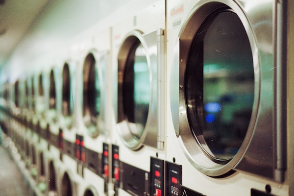

About FreshFold Laundry
We're a proudly South African laundry business built on hard work, community, and a passion for clean clothes.
Our Story

FreshFold Laundry was founded in 2018 by siblings Nomsa and Thabo Dlamini in the heart of Johannesburg. What started as a single washing machine and a folding table in their mother's garage has grown into a full-service laundry operation serving hundreds of households and businesses across Gauteng.
The idea was born out of necessity. Like many South Africans juggling long working hours, family responsibilities, and commutes, Nomsa and Thabo understood the pressure of keeping up with household chores. Laundry — endless, time-consuming laundry — was always last on the list. They knew there had to be a better way.
Starting with just five loyal customers from their street, they built a reputation for reliability, quality, and a personal touch. Word spread quickly. By 2020, they had hired their first employees — all from the local community — and moved into a dedicated facility. Today, FreshFold employs twelve people and serves over 400 regular customers.
Through economic uncertainty, load shedding, and the challenges of running a small business in South Africa, FreshFold has continued to grow — because at the heart of everything is a simple promise: we treat your clothes like our own.
Our Vision
"To be the most trusted laundry service in South Africa — freeing up the time of every South African household so they can focus on what matters most."
We envision a South Africa where no one has to stress about laundry. Where small businesses and families alike can access affordable, reliable, and professional laundry services — delivered conveniently to their door. We believe in building a business that serves our community, creates sustainable jobs, and operates with integrity.
Our Mission
At FreshFold, our mission is to deliver exceptional laundry and dry-cleaning services that save our customers time, reduce stress, and return genuinely clean, well-cared-for clothes. We commit to:
- Quality: Using the best cleaning products and techniques to care for every garment.
- Reliability: Delivering on time, every time — no excuses.
- Transparency: Clear pricing, no hidden fees, and honest communication.
- Community: Hiring locally, supporting township suppliers, and giving back through our Clean for Good programme.
- Sustainability: Reducing water usage and using biodegradable, eco-friendly cleaning agents.
Our Core Values
- Honesty
- We are straightforward about our pricing, turnaround times, and limitations. We never overpromise.
- Care
- Every item that comes through our doors is treated with respect — from a school uniform to a wedding dress.
- Community First
- We are rooted in our community. Our staff, suppliers, and customers are our neighbours and we treat them as such.
- Continuous Improvement
- We invest in better equipment, training, and processes so our service gets better every year.
- Environmental Responsibility
- We monitor our water and energy usage and work toward a lower environmental footprint year on year.
Our Journey
| Year | Milestone |
|---|---|
| 2018 | Founded by Nomsa and Thabo Dlamini in Johannesburg with 5 customers. |
| 2019 | Grew to 80 regular customers; launched first pickup and delivery service. |
| 2020 | Moved into dedicated facility; hired first 4 employees from the local community. |
| 2021 | Launched dry cleaning service; partnered with 3 corporate clients in Sandton. |
| 2022 | Introduced online booking and payment system; reached 300 regular customers. |
| 2023 | Launched the Clean for Good initiative — free laundry for local shelter residents monthly. |
| 2024 | Team grew to 12 staff; expanded delivery zones to Pretoria and East Rand. |